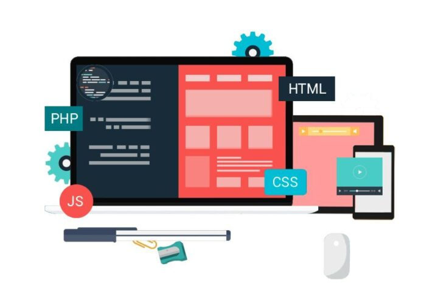

Las aplicaciones web son una parte fundamental de la experiencia digital actual, ofreciendo una forma versátil y accesible de proporcionar servicios y funcionalidades a los usuarios a través de la web.
JavaScript: Esencial para el desarrollo web, se ejecuta en el navegador del usuario y permite la interactividad en la interfaz de usuario. HTML (HyperText Markup Language): Utilizado para estructurar el contenido web. CSS (Cascading Style Sheets): Se utiliza para dar estilo y diseñar la presentación de las páginas web.
La arquitectura de una aplicación web se divide comúnmente en frontend y backend. El frontend, ejecutado en el navegador, gestiona la interfaz de usuario con tecnologías como HTML, CSS y JavaScript.
El desarrollo de aplicaciones web se ha visto impulsado por diversas tecnologías y herramientas. Frameworks como React, Angular y Vue.js facilitan la creación del frontend, mientras que en el backend, tecnologías como Node.js, Django y Ruby on Rails ofrecen entornos de desarrollo eficientes.
La planificación de aplicaciones web implica la definición clara de objetivos, requisitos y alcance del proyecto. La metodología de desarrollo, como Scrum o Kanban, ayuda a organizar y priorizar tareas. .